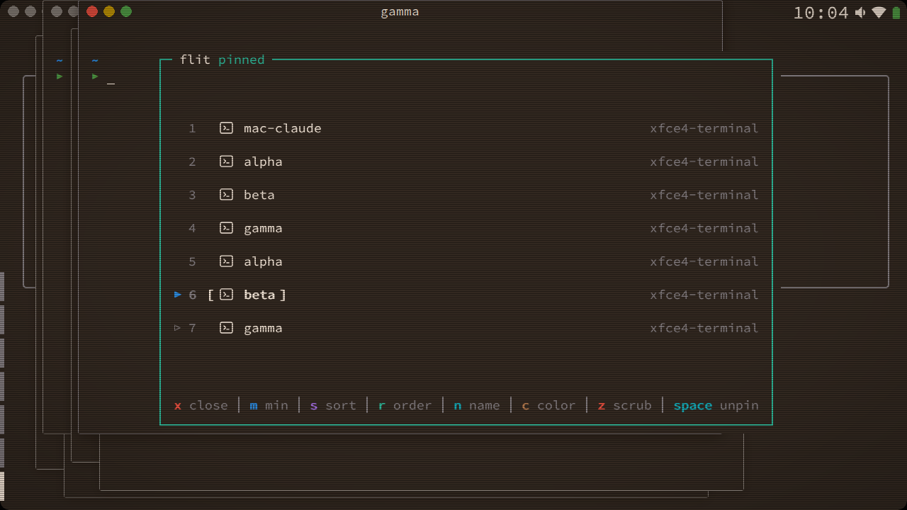
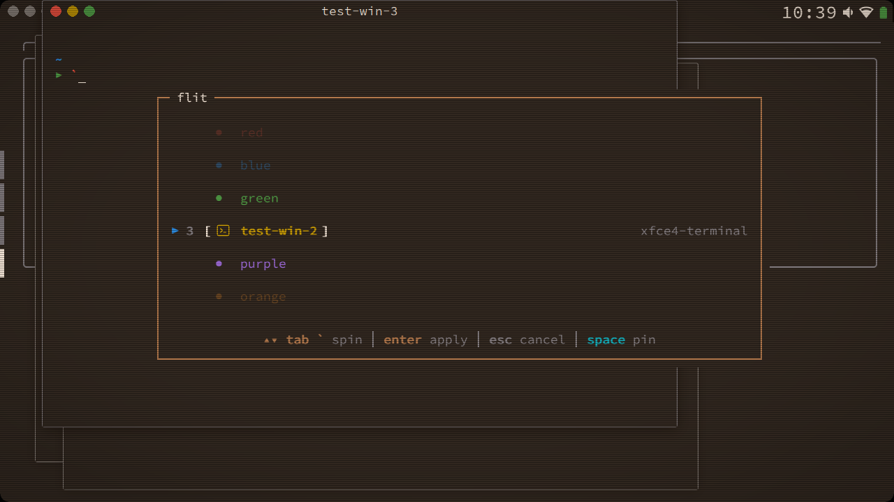
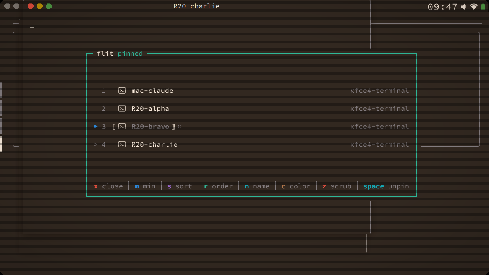
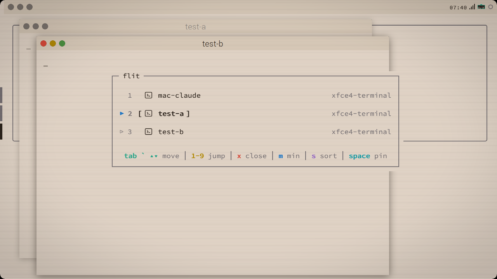
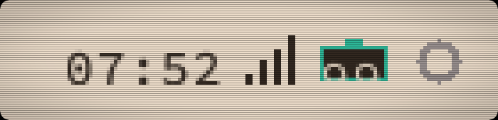

alt-tab does not fit in my hand
I carry a ClockworkPi uConsole: a five-inch ARM Linux handheld with a real keyboard, a trackball, and a full desktop on 1280x720. It is a wonderful object and the stock desktop on it is unusable. Every widget assumes a 27-inch monitor. The window switcher is a grid of thumbnails too small to read and too big for the screen, the taskbar eats a strip you can't spare, and the status tray is a row of icons drawn for a mouse pointer you don't have. Nobody was going to fix that for me. So I wrote the desktop myself, in Rust, and the piece I live in most is the window switcher. It's called flit.
The whole thing started from one sentence I kept saying out loud: on this screen every pixel is rent. Everything that follows is a consequence of taking that literally.

01a column, not a grid
flit is an overlay column: one row per window, tab to walk it, a digit to jump straight to a row. No previews. A preview of a terminal at thumbnail size is a grey rectangle, and I already know what my terminal looks like. Each row is a number, the app icon, the session name I gave the window, and its app class off to the right. The footer is the whole verb set as single keys: close, minimize, sort, reorder, rename, recolor, scrub back through history. Press space and the panel pins open so you can work the list instead of flicking through it. Your hands never leave the keyboard.
The color is the part people don't expect. The desktop has an ombre palette, and every window session gets a named color from it. In flit the focused window renders in full ink, its neighbours in their own session colors, and anything further out fades to slate. So the column reads as depth before you read a single word on it: where you are in the stack is a gradient, not a number.

When you have more windows than rows, flit doesn't paginate. Buffer rows at the top and bottom scroll smoothly and the entries at the edges fade out, so you get a spatial sense of how deep the stack goes and in which direction there is more. Minimized windows stay put in the column with a small marker instead of being shuffled off into a separate group, because losing your place in the list is worse than seeing one dimmed row.

02the taskbar is the same rows
Then the taskbar went. The stock panel was a different program with its own idea of window order, and the two disagreed constantly. I replaced it with two surfaces that live inside the flit daemon itself. The sill is a thin nubbin strip down the left edge, one nubbin per window, and the crest is a click-through cluster of status glyphs -- clock, wifi, battery, bluetooth, volume -- tucked into the corner of the title bar band where nothing else needed the space. One process owns all of it.
That one-process decision is the whole trick. The sill and the flit column share the same row geometry, so they line up pixel for pixel by construction, not by tuning. Reorder a window on the sill and flit follows instantly, because there is no second copy of the order to fall out of sync. The daemon publishes the taskbar order as an X property, so anything else on the desktop that cares can read the same truth.


Retiring the old panel was reversible on purpose: a user-level autostart override, package left installed and held. A rule I keep for everything on this device is that the stock system has to be one config change away at all times, because I am the only person who can fix it and I am sometimes on a train.
03what the hardware taught me
The bug that took longest had nothing to do with windows. Killing the old panel silently killed the volume keys, because a plugin inside that panel had owned them for years. The replacement key binder then lost a boot race: it resolved its keysyms before the keyboard's consumer-control device had attached to X, so it bound nothing, quietly. The audio sink was parked at 35 percent, which masked the audible feedback that would have told me. And the crest's volume glyph refreshed on a 30-second poll, which masked the visual feedback too. Four causes stacked, each one hiding the next, plus one real microcontroller wedge in the middle to keep me honest.
The fix was boring and exactly right: gate the key binder on the X keymap actually being present, not on the kernel device existing; make the glyph event-driven off the audio server instead of polling; and stop parking the sink. I wrote all four causes down in the docs because a bug with four causes will come back wearing three of them.
04how it was built
Every piece of this desktop was specced before it was coded: a plan file with the decisions already made, the names already chosen (sill, crest, the launcher called rocket), the phases and their guard rails, and a full snapshot of the device with a tested revert script as phase zero. Then an agent ran the build overnight against that spec, with a stronger model held in reserve for a handful of bounded review call-ins, and I walked the result in the morning on the actual hardware. It compiles on the device. It survives a reboot, because I don't call anything done on this machine until I have pulled the power and watched it come back.
That process is not special to a handheld. It is how I run delivery at work, just with a smaller screen. Decide in writing, build against the decision, verify on the real thing, keep the rollback one step away. The uConsole is where I get to do it with no one else in the loop, which is exactly why it's the best place to practice.
flit is Rust on X11, part of the clockwork-lab monorepo. Config in TOML. Compiled on the device it runs on.